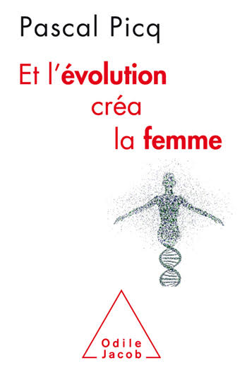

L'évènement Anthropocène — Christophe Bonneuil & Jean-Baptiste Fressoz
Un incontournable sur la mondialisation ; un essentiel pour le reste des sciences humaines et sociales

L'Événement Anthropocène m'a été conseillé par une amie après une longue (et passionnante) conversation sur un monde idéal. Issu du travail monumental de Christophe Bonneuil et Jean-Baptiste Fressoz, avec une documentation assez exceptionnelle, tant par sa taille que par sa diversité, cet essai faisait partie des lectures obligatoires pour la préparation des oraux de géographie de l'ENS de Lyon (en lettres modernes) cette année 2026. L'ouvrage se propose notamment de revenir sur l'événement Anthropocène, sorte d'ère géologique pour qualifier cette période qui s'étale depuis la révolution industrielle (mais pas seulement, c'est justement l'objet de toute une partie) jusqu'à nos jours. D'environ 300 pages, c'est une lecture plus qu'instructive : elle permet de revenir sur les bases de la globalisation, de l'économicisation et de tant d'autres processus en « -ion » à l'œuvre depuis 1780, qui constituent une grille de lecture extrêmement puissante pour la plupart des sujets (du terrorisme jusqu'à l'individualisme).
Le livre se décompose en trois grandes parties : « Ce dont l'Anthropocène est le nom » ; « Parler pour la Terre, guider l'humanité » (avec comme sous-titre « Déjouer le grand récit géocratique de l'Anthropocène ») et « Quelles histoires pour l'Anthropocène ? ». Structure très déséquilibrée donc, puisque la première et la deuxième section font une centaine de pages à…
Continuer à lire
24 novembre 2026
Et l'évolution créa la femme — Pascal Picq
Une lecture passionnante sur la nature culturelle des violences contre les femmes

Dans la suite de mes recherches
sur la psycho-évolution, et les sciences évolutionnaires (dont vous trouverez
les prémisses dans cette critique d’un ouvrage de Thomas Durand), je me suis
intéressé cette fois-ci à un écrit de Pascal Picq : Et l’évolution créa
la femme, paru en 2020. L’auteur est paléoanthropologue de formation,
maitre de conférences, auteur très prolifique sur des sujets qui ont l’air
assez passionnants (pour ne citer que les titres de ses dernières publications :
La préhistoire du genre (2026), Anthropologie des violences faites
aux femmes (2026), L’IA, le philosophe et l’anthropologue (2024),
etc.).
Le livre fait environ 460 pages
et est divisé en deux parties : 1) « Sexe, sexualité et coercition
sexuelle chez les singes et les grands singes et 2) « évolution humaine et
coercition sexuelle ». D’emblée je précise : je n’ai lu que la
seconde partie (et les deux premiers chapitres de la première partie), pour la
bonne et simple raison que, même si la vie des singes peut paraitre palpitante,
elle a tendance à m’ennuyer. Heureusement, Pascal Picq précise : « Si
cette seconde partie peut se lire indépendamment de la première, celle-ci n’en
est pas moins nécessaire dans la mesure où les représentations courantes de l’homme
sont entachées d’une confusion héritée d’un débat philosophique entre Hobbes et
Rousseau pour savoir si l’homme à « l’état de nature » était…
Continuer à lire
15 novembre 2026
L'Ironie de l'évolution — Thomas Durand
Une lecture mitigée, néanmoins, une bonne vulgarisation de la théorie de l'évolution

L’Ironie de l’évolution
est un ouvrage de Thomas Durand, paru aux éditions du Seuil en 2018 et rattaché
à la catégorie des sciences humaines et des sciences ouvertes. A l’intérieur de
ces pages sont traités : les théories évolutionnaires ; les biais
cognitifs ; la religion ; et une explication évolutionnaire de la
religion. Programme ambitieux, donc, qui a été récompensé par une place dans la
sélection « La science se livre » organisée par la Bibliothèque
nationale de France.
Cette lecture s’inscrit dans un
contexte assez particulier ; formé aux sciences sociales (passée par une
classe préparatoire B/L, admissible au département SHS de l’ENS Paris-Saclay,
diplômé de Sciences Po), je suis tombé récemment sur une vidéo d’un Youtubeur, « Evosapiens »,
docteur en psychologie évolutionnaire, qui commentait une autre vidéo des « Revues
du Monde » sur le dégoût. Et il l’expliquait
par la biologie et les mécanismes adaptatifs de l’évolution !
Grave erreur ! C’est un interdit absolu, une hérésie, presque ! On ne
peut pas essentialiser ou naturaliser des comportements ou des structures
sociales par une approche biologique.
Mais de fait, j’ai été
suffisamment troublé pour chercher à me renseigner sur le sujet, et j’ai
découvert tout un monde de controverses, où cohabitent de façon plus ou moins
indistinctes et floues, psychologie évolutionnaire, biologie comportementale,…
Continuer à lire
12 novembre 2026